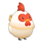

Gallinero


En el gallinero solo podias criar gallinas y entre las gallinas podemos encontra una que es la gallina sedosa.

Gallina blanco 2.000 G

Gallina Sedoso 4.000 G
A diferencia de mejorar el edificio, aqui se tiene que contruir la vercion mejorada y este constara como otro edificio independiente, con esto tendra dos gallinero y podra albergar mas animales. El gallinero normal solo tiene espacio para tener hasta 5 animales y el gallinero grande tiene espacio para tener hasta 10 animales.
Produccion
Si los pollos son cuidados de forma excelento estaran contentos y saludables, esto afectara a sus productos y enves de dar un producto normal pondra un "+".
| Gallinas | Produce |
|---|---|
Gallina |
 Huevo  Huevo + |
Gallina sedoso |
 Huevo de seda  Huevo de seda + |
También puedes usar la cocina para hacer un Huevo X y las mayonesas pero para eso debes de haber desbloqueado las recetas del libro de cocina.